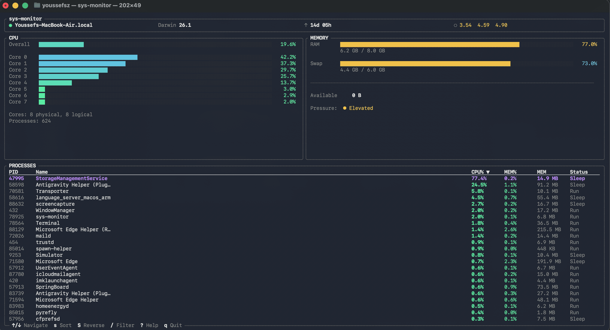

Terminal system monitor
A fast, minimal terminal system monitor built with Rust and Ratatui. Real-time CPU, memory, and process monitoring with a clean, keyboard-driven interface. No bloat. No GUI. Just signal.
curl -sSL https://raw.githubusercontent.com/youssefsz/sys-monitor-Rust/master/install.sh | bash
powershell -Command "irm https://raw.githubusercontent.com/youssefsz/sys-monitor-Rust/master/install.ps1 | iex"

Aggregate usage bar with optional per-core breakdown. Color-coded severity from idle to critical.
RAM and swap usage with human-readable values. See exactly what is consuming your system memory.
Top processes sorted by CPU or memory. Filterable by name. Keyboard-driven navigation and sorting.
Hostname, OS version, uptime, and load averages at a glance. Always visible in the header bar.
Safely kill or force-kill unresponsive apps, or copy their PIDs directly to your clipboard.
Instantly reveal the exact executable path of any running process in Finder with a single action.
Full-screen interactive tree view showing ancestor chains and children of processes.
Full navigation without a mouse. Sort, filter, scroll, and quit from the keyboard. Press ? for help.
Sub-millisecond render loop. Less than 15 MB memory footprint. Startup in under 200ms.